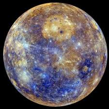

Mercurio

Mercurio es el planeta del sistema solar más próximo al Sol y el más pequeño. Forma parte de los denominados planetas interiores o terrestres y carece de satélites al igual que Venus. Se conocía muy poco sobre su superficie hasta que fue enviada la sonda planetaria Mariner 10 y se hicieron observaciones con radar y radiotelescopios.